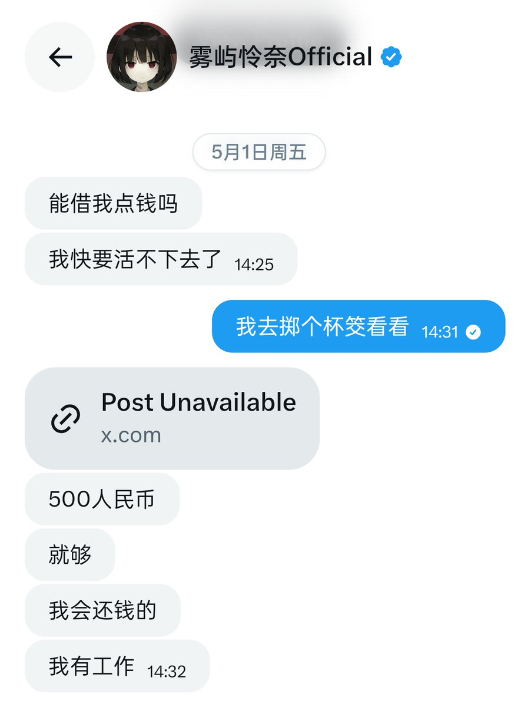
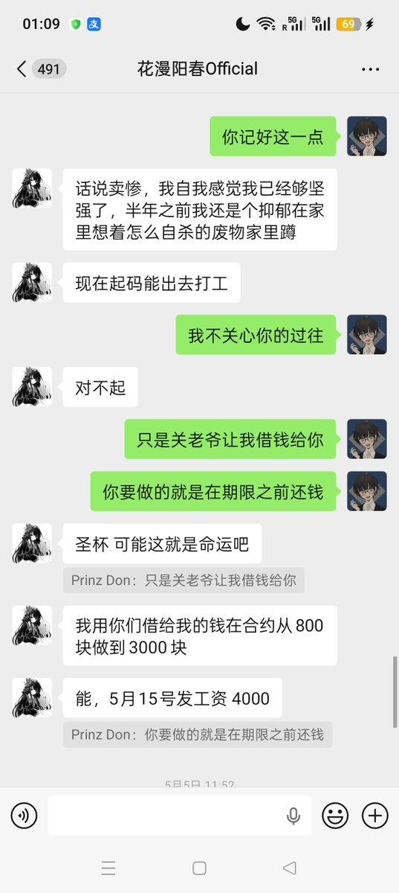

拱北靠北
@psyofsouthwest
@Tang_Shuoyang 自称是石原椿的徒弟，必然是骗子老赖之类的


Nicholas Don
@Tang_Shuoyang
通报一项债务违约。
@HuamanX09 于2026年5月1日利用非法网络信道，同在日的本人达成救济目的的善意借款合意。随后未知会本人合并他处借款进行非法交易活动，此后积极逃避偿还债务。其行为已涉嫌犯罪。
恳请其他此人其他债主通过合法途径联系我，我目前已请律师介入。并预计于7月中回国向公安机关报案。 https://t.co/QTKMykEwA7